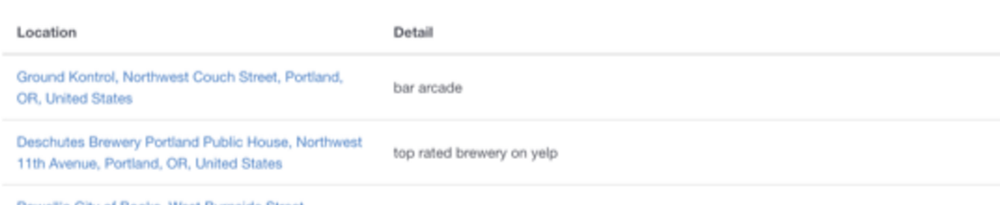

Compass is a web application that allows you to create lists filled places you have always wanted to go.
I redesigned a web application that allows people to track and share travel recommendations. As part of a team that consisted of one back-end engineer and one front-end engineer, my responsibility was to create a user flow where users can create a hit list, add points of interest and lastly to be able to share their list with friends.

Hard to keep track of travel recommendations.
Provide a overview of services.
People use different tools to capture and share travel recommendations


Map view alone isn't really that helpful so there is no point in having that option. Instead of having two separate view options, I decided to go back and create a hybrid view that included the list and the map at the same time. This allowed the user to view a list item's details while also being able to see where it is located on the map. In addition to the feedback, it was time to implement a stylistic voice.
The unclear hierarchy in the intial layout came in hand with the hierarchy of the text. The first instance I noticed is in the main content where the "Location" is listed- the name of the location was combined with the address. Although the date of the place might be important for the user, the map can provide that information. At first glance, the name of the place should be prominent and hard to search as the initial design proves. Another instance is in the left most column, the title of the restaurant should come first and the date second.

Another feature that was not implemented yet was being able to share a list. Similar to the schema of Google Docs, we resolved to add a share button on the list page that would allow the user to share their list, uneditable but free to replicate.

Incorporating the feedback into our the design ultimately created a more clear experience for users. The hierarchy of the text,
In the current design as it exists today, we aim to create an experience where a person can create, explore, and share the places they want to go and have been.
1. People like to see where other people are going to.
2. Save these places into a list
3. Look up the location of these places